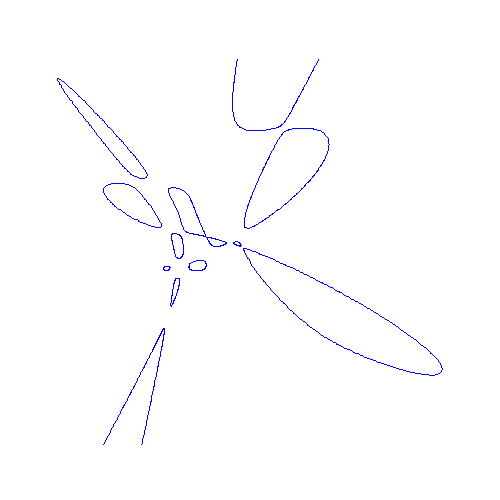
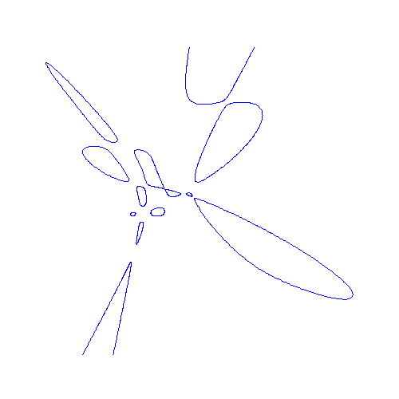
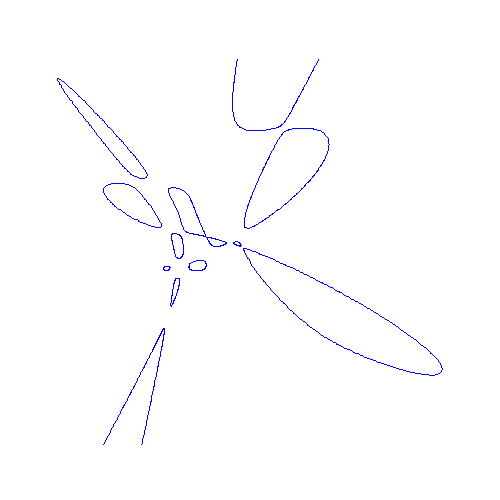

We give some real algebraic plane curves whose hessians have more connected
components than had been known previously.
In particular, we give a quartic whose hessian has 4 compact connected
components (ovals), a quintic whose Hessian has 8 ovals, and a sextic with 11
ovals and 2 unbounded components.
We discuss the possible configurations of ovals of hessian curves and of
parabolic curves for surfaces arising as graphs of polynomials.
Companion web page.
Here are some pictures from this project:
